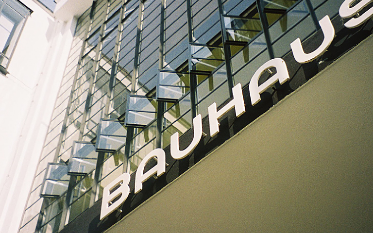

Bauhaus – легендарная высшая школа в Германии, где фактически изобрели архитектуру модернизма, которая провозглашала все утилитарное и функциональное красивым.

Bauhaus – легендарная высшая школа в Германии, где фактически изобрели архитектуру
Старое здание Национальной библиотеки или Дом Правительства в Минске, квартал Баухас в Тель-Авиве – отзвуки идей, над которыми в 10-30-ых годах прошлого века работали немцы. Если тебе всегда была по душе четкость линий и ты согласен, что «меньше – значит больше», предлагаем насыщенное путешествие в модернизм. Горячими точками станут Дессау, Ваймар и Берлин – три города, в которых существовала школа. Основателем Баухауса был известный немецкий архитектор Вaльтер Гропиус, который сильно повлиял на развитие архитектуры капиталистического общества. Железобетон, стекло и металл – новые материалы, которые вводит в обиход Гропиус. Его базой становится эстетика конструктивизма, которая в 10-30-е годы превращается в мощное течение, захватившее мир. Геометричность, полное отсутствие декоративности становятся ответом на проблемы индустриального общества, которому после войны приходилось экономить на всем.